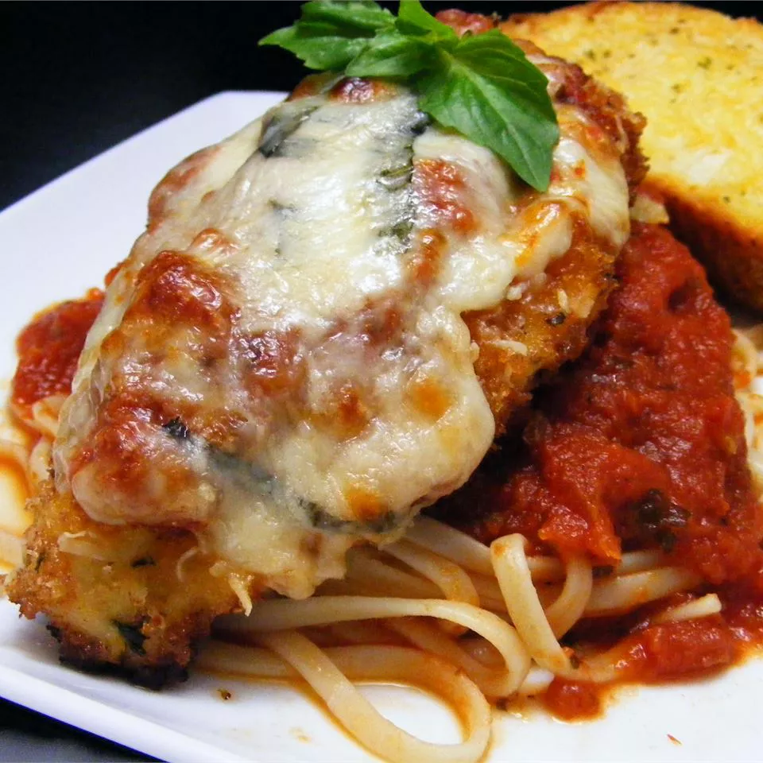

Chicken Parmesan

Description
A simple dish that'll keep you coming back for more!
An italian immigrant classic!
Ingredients
Tomato Sauce:
- 2 tablespoons extra-virgin olive oil
- 2 medium garlic cloves
- A 28 ounce can of crushed tomatoes
- 1/2 teaspoon dried basil
- 1/4 teaspoon dried oregano
- 1/4 teaspoon sugar
- salt and pepper
Pasta
- 8 ounces of linguine pasta
The Chicken
- 2 large boneless skinless chicken breasts
- 1 large egg
- 1/2 a cup of dry bread crumbs
- Black pepper
- 1/4 cup of extra-virgin olive oil
- 1/2 cup grated mozzarella cheese
- 1/4 cup grated Parmesan cheese
Steps
-
Heat oil and garlic in a large saucepan over medium-high
heat until garlic starts to sizzle. Stir in tomatoes, basil, oregano, and sugar;
season with salt and pepper. Bring to a simmer; cook until sauce slightly
thickens and favors meld, 10 to 12 minutes. Cover and keep warm. (Remember,
this makes twice the amount of sauce needed, so put aside half for another
meal.)
-
Boil a large pot of lightly salted water.
Cook spaghetti in boiling water, and stir occasionally
for 12 minutes. Drain the pot of water and keep warm.
-
Lay chicken pieces between 2 sheets of plastic wrap
Pound the chicken till it's about 1/4-inch thick.
-
Beat the egg into a dish until it's blended and
throw in bread crumbs with black pepper in another dish.
-
Preheat the oven to high.
-
Batter the chicken in the egg and then cover it in breadcrumbs
Lay the bread-covered chicken on a wire rack set over a cookie sheet.
-
Heat a 1/4 cup of oil in a 12-inch skillet
-
Fry the chicken until they're golden brown for about 5 minutes
-
Spread mozzarella and parmesan cheese onto the chicken and broil
until the cheese melts for about 2-3 minutes.
-
Put the pasta and chicken onto a plate and serve.
Go Back To Recipe Site
Click here